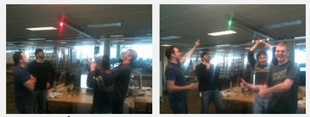
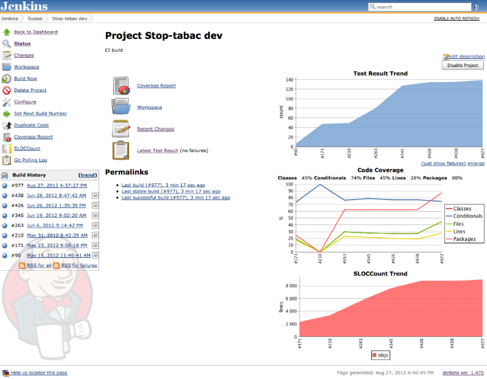
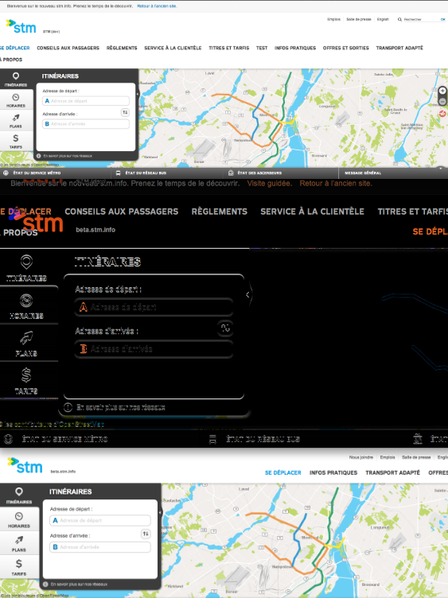

Continuous integration: a practical example
Albert Albala
@alberto56
albert@tp1.ca
http://drupal.org/user/245583
IRC: alberto56
How we code, test and deploy now
How we should be coding, testing and deploying
What is Continuous integration
automate testing
code commit triggers testing
state of your project always known
Initial deployment should be easy (drush en demo_deploy -y)
Incremental deployment should be easy (drush updb -y)
What you should know
Testing is time-consuming
Tests
are
code
If you don't write your tests before your code, you will never write them
The best tests involve all stakeholders
Tests are documentation
Making something work locally is half the battle: it should also deploy initially and incrementally
Testing, CI and deployment go hand-in-hand
Testing
The more tests you have, the more confident you'll be to release code to production
100% confidence = continuous deployment
Hard-to-test scenarios
Test somethig that "only happens on production"
Test the time of day
Test external systems
To test: reproduce, then test, then fix
Don't clone your database
Use Features, Context, Strongarm, hook_update_n() and hook_requirements()
D8: Use CMI
Your tests are owned by the whole team
Be ready to drop everything if a test breaks
Is there a consensus on breaking for a coding style issue?
Fails should be visible

Only push work to the master branch
Jenkins takes care of moving to production
Don't subvert your process
All your clients' credit card numbers are visible on your homepage.
Should your one-line fix go through two hours of tests?
It's about the culture
Devs, themers will subvert your process
...unless they own it
Advantages
It "used to work".
Who did what, when?
Since when is something broken?
Better define "it works"
Your website is a software product
...which can be deployed any number of times
...which can be upgraded
...which you can deploy painlessly (drush en demo_deploy -y)
...which you can upgrade painlessly (drush updb -y)
Example: the STM website takes 5 minutes to deploy: drush en stm_deploy -y
What more can CI do for you?
Keep track of metrics over time

Take snapshots and image diffs

Provision VM for testing production-like environments
As easy as running vagrant up and versioning your Chef or Puppet files
Useful if you are targeting a specific version of PHP, for example
Test Browsers
And take screen captures and videos for further reference
Example video from the STM project
This idea initially from the Economist project
Test IE
Run behat and remote selenium on a Windows VM
Conclusion: what is preventing us from implementing this?
Conclusion: what is preventing us from implementing this?
It takes time, but paradoxically, we're too busy _because_ we're not using these tools
It is scary
We don't have standards (see dcycleproject.org)
We need to be careful about our tests not being longer than 2 hours
Recommended reading: "Continuous delivery" by J. Humble and D. Farley
Continuous integration: a practical example
Albert Albala
@alberto56
albert@tp1.ca
http://drupal.org/user/245583
IRC: alberto56
←
→
/
Go to slide:
#